Наша команда — это мастера, которые понимают природу боли, восстановления и напряжения. Мы не просто делаем массаж — мы работаем на оздоровление вашего организма.
Наш центр — это не салон для «расслабления на час». Мы подходим к телу глубоко: через диагностику, знания анатомии, лечебный и восстанавливающий массаж.
У нас работают массажисты с медицинским образованием и врачи-реабилитологи. Каждый клиент — это отдельная история, которую мы внимательно изучаем, чтобы вернуть подвижность, убрать боль и дать телу новое дыхание.
Услуги
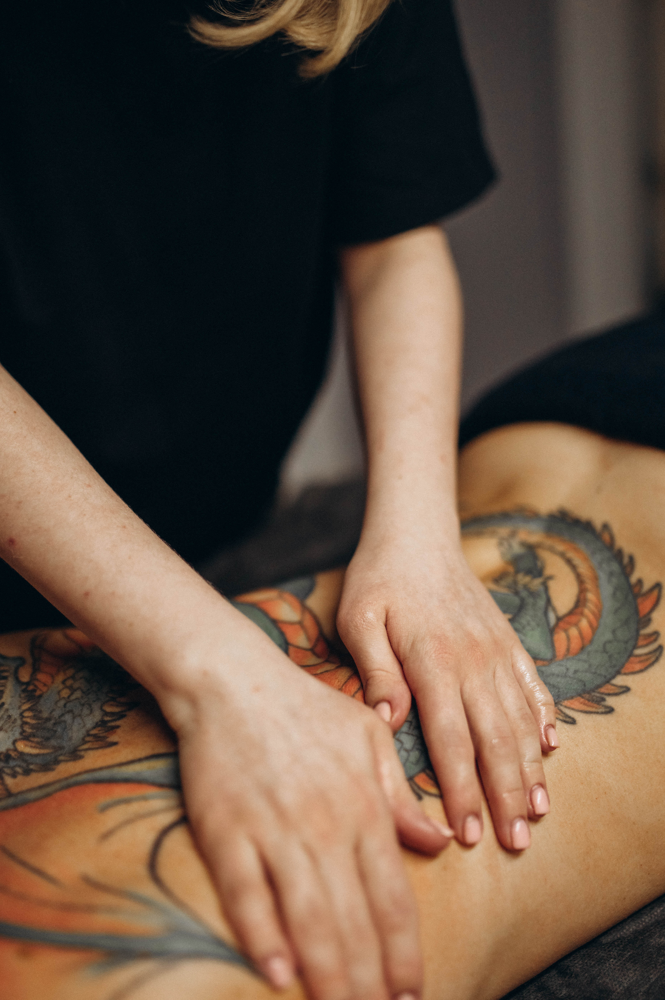
Общий массаж классика
Универсальное оздоровление: снимает напряжение, улучшает кровообращение и общее самочувствие.
Подробнее →
Общий массаж классика
— универсальный метод оздоровления, направленный на улучшение общего состояния организма, снятие напряжения и стимуляцию кровообращения.
Классический массаж включает в себя:
• ритмичные растирания
• выжимания
• разминания и вибрации, которые активируют обменные процессы, расслабляют мышцы и улучшают лимфоток.
Он эффективно:
• снимает усталость
• восстанавливает после физической и умственной нагрузки
• помогает при хроническом стрессе и нарушениях сна
• улучшает тонус и гибкость мышц
Классический массаж часто назначается как профилактическая и поддерживающая мера при болях в спине, шее, пояснице, а также в рамках реабилитации.
Подходит практически всем — и тем, кто хочет просто расслабиться, и тем, кому важно восстановление тела в комфортном и щадящем режиме.
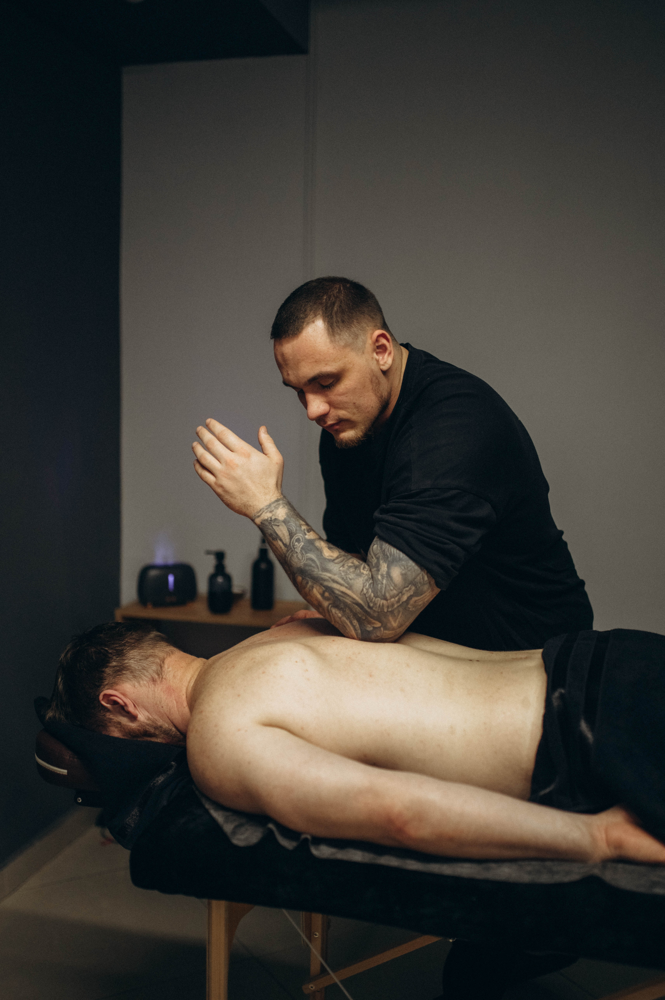
Глубокомышечный триггерный массаж
Глубокая проработка мышц, снятие спазмов и устранение триггерных точек.
Подробнее →
Глубокомышечный триггерный массаж
— высокоэффективный метод устранения хронических мышечных дискомфортов и восстановления нормального функционирования мышц.
Данный вид массажа направлен на: глубокую проработку, снятие гипертонуса, вытягивание и расслабление укороченных в следствии спазмирования мышц, устранение триггерных точек.
Болевые точки (триггеры) возникают в результате воспаления и спазма мышц, что приводит к ограничению подвижности и болевым ощущениям.
Эти точки могут вызывать боль не только в месте своего расположения, но и распространять её на соседние области тела. Например, триггерная точка в плечевом суставе может вызывать боль в шее или руке.
Положительные эффекты массажа:
• улучшение кровообращения: массаж стимулирует приток крови к органам и тканям, что способствует их насыщению кислородом и питательными веществами
• снятие мышечного напряжения: регулярные сеансы помогают расслабить мышцы, избавиться от зажимов и спазмов
• уменьшение боли и дискомфорта: триггерный массаж эффективен при головных болях, болях в спине и суставах
• повышение общего тонуса организма: процедура заряжает энергией, улучшает настроение и повышает работоспособность
• стимуляция иммунной системы: активизация точек способствует укреплению иммунитета и повышению сопротивляемости организма к болезням
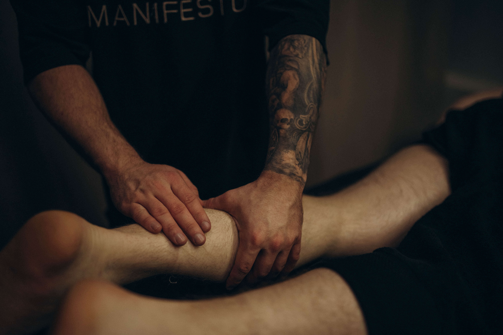
Расслабляющий массаж
Снимает физическое и нервное напряжение, восстанавливает гармонию тела и ума.
Подробнее →
Расслабляющий массаж
— процедура, позволяющая снять физическое и нервное напряжение, расслабить мышцы, улучшить настроение, повысить иммунитет.
Такой вид массажа безболезнен, все движения плавные и медленные.
Главная цель воздействия — восстановить гармоничное взаимодействие между головным мозгом и мышцами, так как эмоциональные переживания влекут за собой напряжение мышц.
Показания к процедуре:
• затяжное стрессовое состояние
• нервное перенапряжение
• пониженный иммунитет (частые простудные заболевания, сонливость, усталость)
• снижение работоспособности
• синдром хронической усталости (физической и эмоциональной)
• бессонница
Массаж ШВЗ, лица, головы
Деликатное снятие напряжения, улучшение микроциркуляции и нормализация сна.
Подробнее →
Массаж шейно-воротниковой зоны, лица, головы
— деликатный, но эффективный метод снятия напряжения, улучшения микроциркуляции и общего самочувствия.
Этот вид массажа включает работу с:
• шейно-воротниковой зоной
• мышцами лица
• зоной черепа и скальпа
Он направлен на:
• снятие мышечного зажима в области шеи и плеч
• расслабление жевательных и мимических мышц
• улучшение кровоснабжения головы
• снижение головных болей и напряжения
• нормализацию сна и уменьшение уровня стресса
Массаж лица и головы мягко влияет на нервную систему, снижая уровень тревожности и усталости.
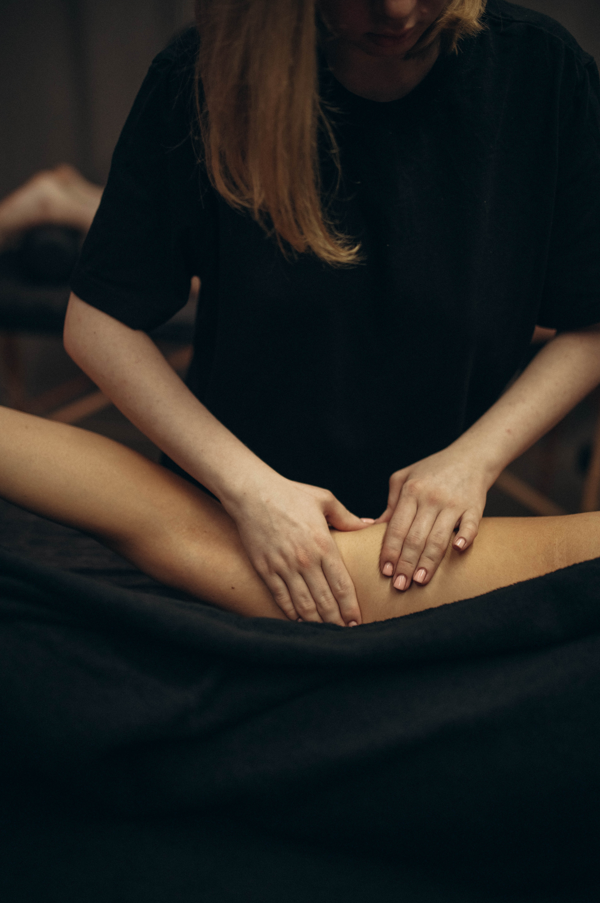
Антицеллюлитный массаж
Безоперационная борьба с несовершенствами кожи, активизация обмена и лимфотока.
Подробнее →
Антицеллюлитный массаж
— безоперационный метод борьбы с визуальными несовершенствами кожи.
Массаж выполняется на всех проблемных участках тела и представляет собой комбинацию разогревающих, разминающих, вибрационных движений.
Этот вид массажа способствует:
• проникновению кислорода в глубокие слои кожи
• ускорению лимфатического оттока
• активизации обменных процессов в организме
• улучшению тургора кожи
• выведению лишней межклеточной жидкости
• увеличению выработки коллагена и эластина
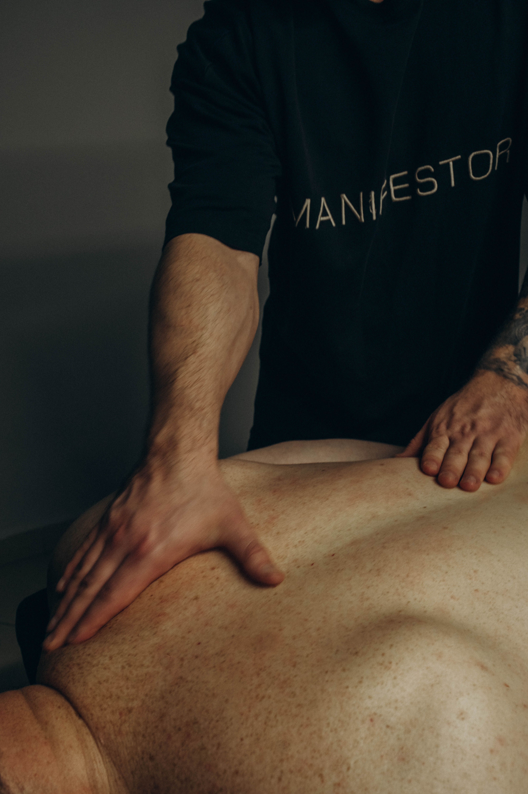
Массаж спины
Работа с мышцами шеи, плеч, лопаток и поясницы для снятия боли и скованности.
Подробнее →
Массаж спины
— подразумевает воздействие на мышцы шеи и плеч, лопаточной области, прямые и косые мышцы спины и пояснично-крестцовый отдел.
Процедура позволяет:
• избавиться от скованности в мышцах
• снять болевой синдром и отечность
• усилить циркуляцию крови
• улучшить состояние подкожно-жировой клетчатки
• повысить работоспособность организма
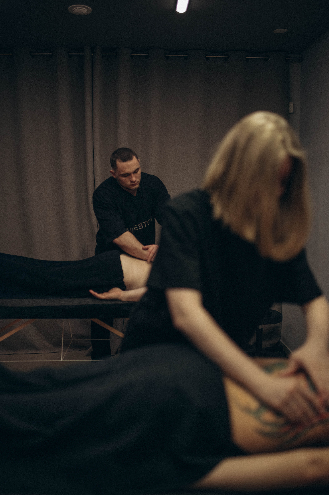
Парный массаж
Совместный ритуал для тела и эмоций: два мастера, один ритм, полная гармония.
Подробнее →
Парный массаж
— это совместный ритуал, который помогает восстановить не только тело, но и эмоциональную связь между близкими.
Во время парного массажа вы находитесь в одном кабинете с партнёром — в уютной атмосфере, под расслабляющую музыку, рядом с тем, кто вам дорог.
Процедура включает:
• синхронную работу двух мастеров
• индивидуальный подбор техники для каждого
• массаж в едином ритме, создающий ощущение полной гармонии.
Парный массаж помогает:
• глубоко расслабиться
• перезагрузиться после стресса
• укрепить эмоциональный контакт
• провести время вдвоём с пользой для здоровья
Подходит для пар, друзей, родных. Идеальный выбор, если хочется подарить совместный отдых, объединённый заботой и тёплым прикосновением!
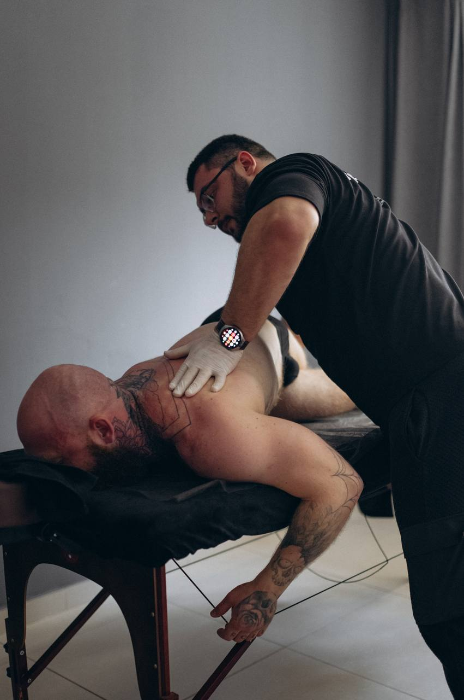
Мануальная терапия
Комплекс методик для восстановления подвижности суставов и снятия болевых синдромов.
Подробнее →
Мануальная терапия
— это комплекс лечебных методик, направленных на восстановление подвижности суставов, снятие мышечных блоков и устранение болевых синдромов.
В основе мануальной терапии:
• точечная диагностика руками
- мягкое и точное воздействие на позвоночник, суставы, связки и мышцы
• восстановление баланса между опорно-двигательной системой и внутренними органами
В ходе сеанса могут применяться:
• техники мышечной релаксации
• коррекция положения позвонков
• элементы рефлексотерапии — воздействие на биологически активные точки для стимуляции естественных механизмов восстановления организма
Мануальная терапия помогает:
• устранить головные и мышечные боли
• улучшить подвижность и осанку
• снять защемления нервов
• запустить процессы саморегуляции в теле
Процедура всегда проводится врачом с медицинским образованием, после диагностики и с учётом особенностей вашего организма.
Это серьёзная, но мягкая и точная работа с вашим телом — без боли, с глубоким эффектом и ощущением лёгкости уже после первого сеанса!
Ваши тела — в надёжных руках!
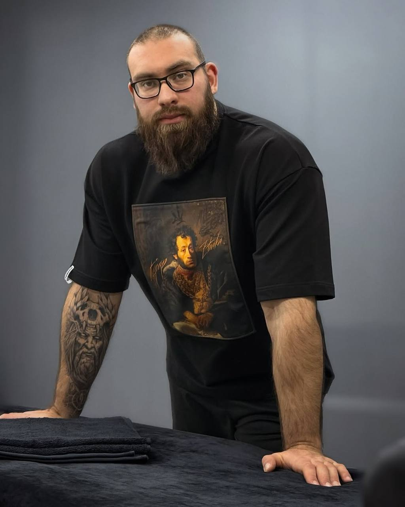
Юдинцев Евгений
Авторский глубокий массаж, устранение спазмов и восстановление после травм.
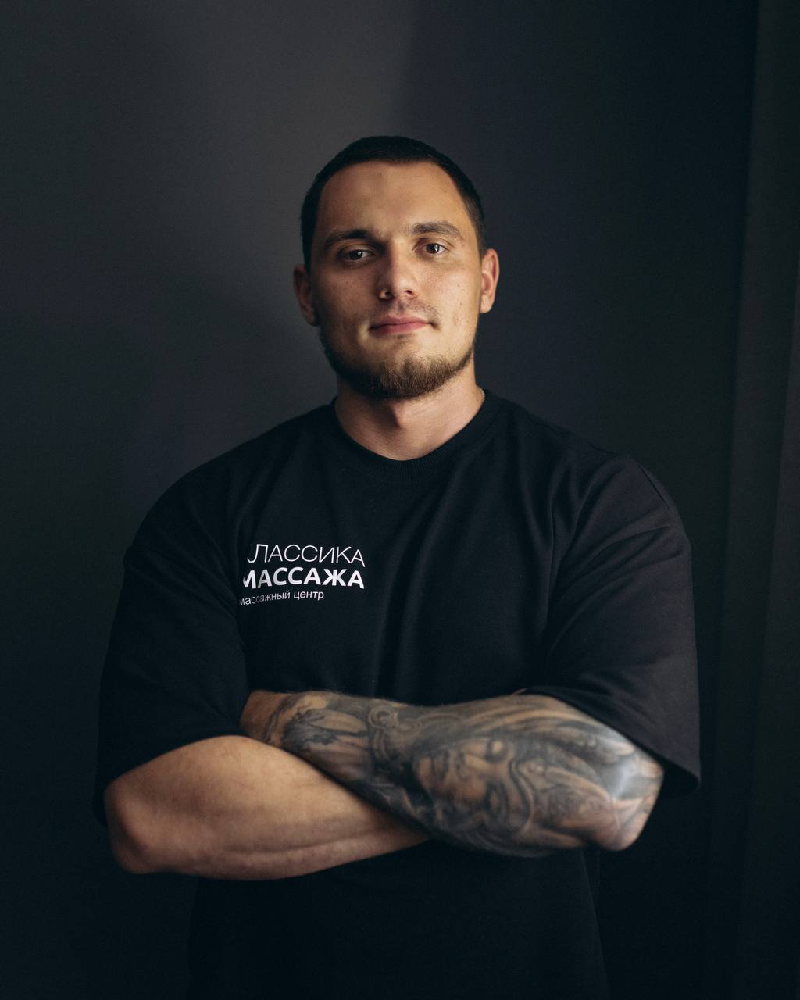
Морозов Артём
Глубокий, точный подход. Спортсмен, вице-чемпион СФО по бодибилдингу.
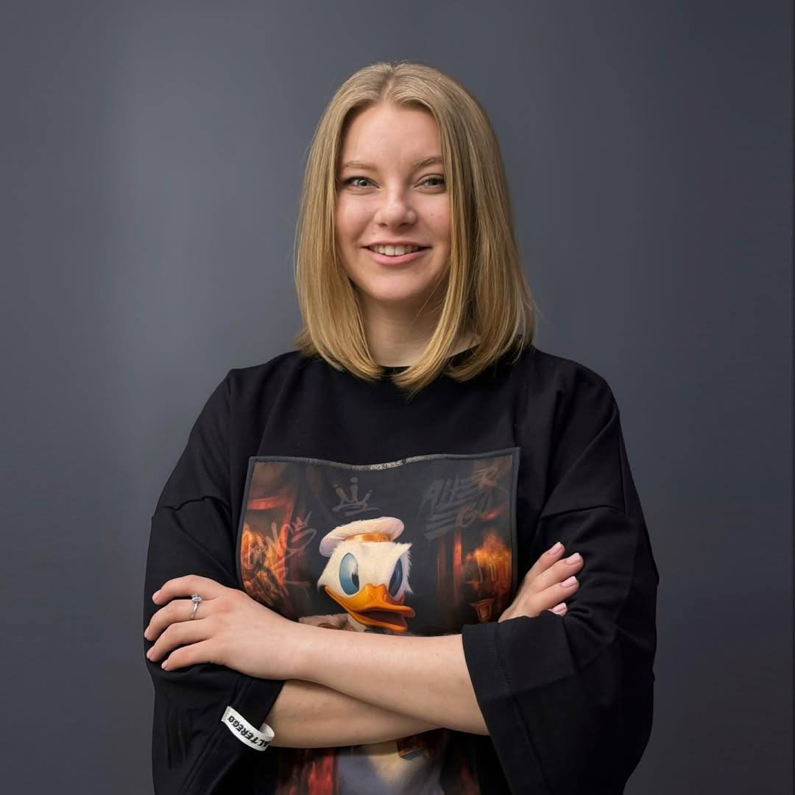
Антоненко Анастасия
Медицинское образование, заботливый и точный подход к вашему телу.
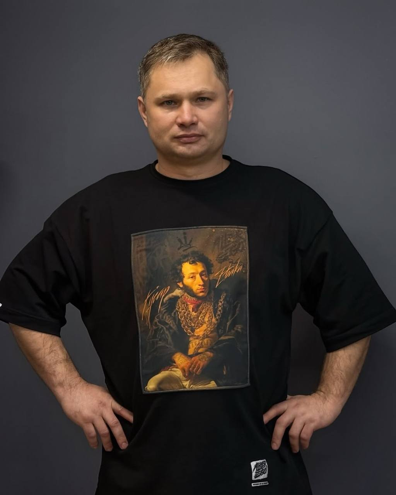
Чирков Александр
Глубокая проработка мышц без лишней боли, индивидуальный подход.
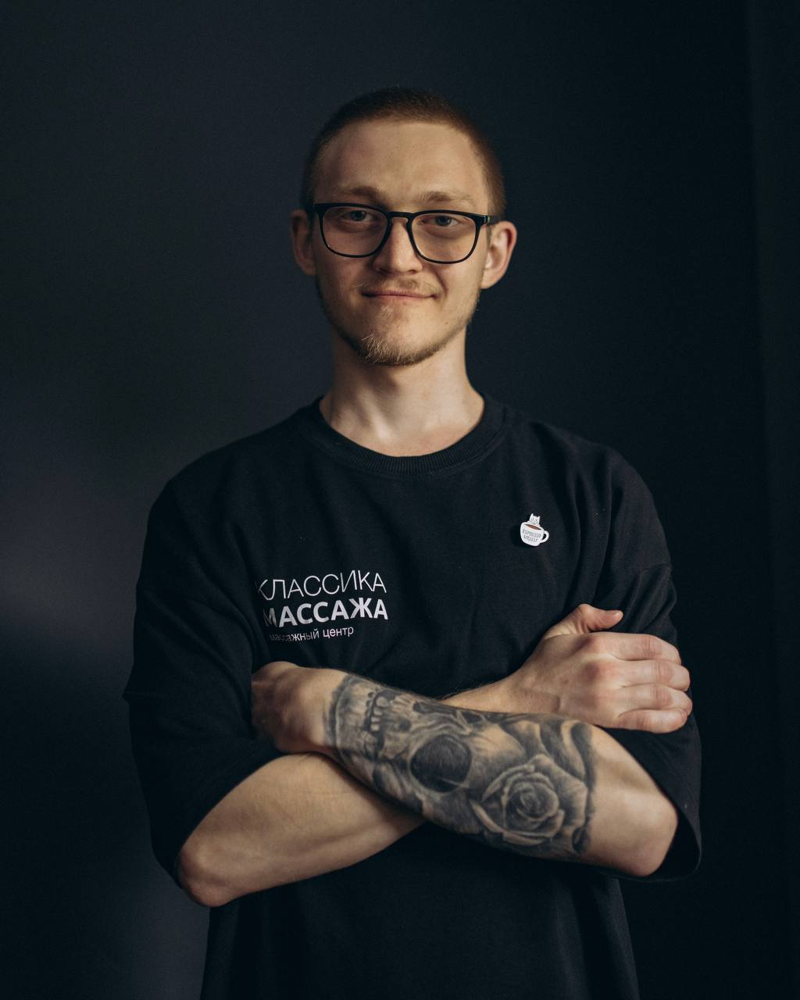
Иванов Леонтий
Классический, глубокий и расслабляющий массаж. Чуткость и сила вместе.
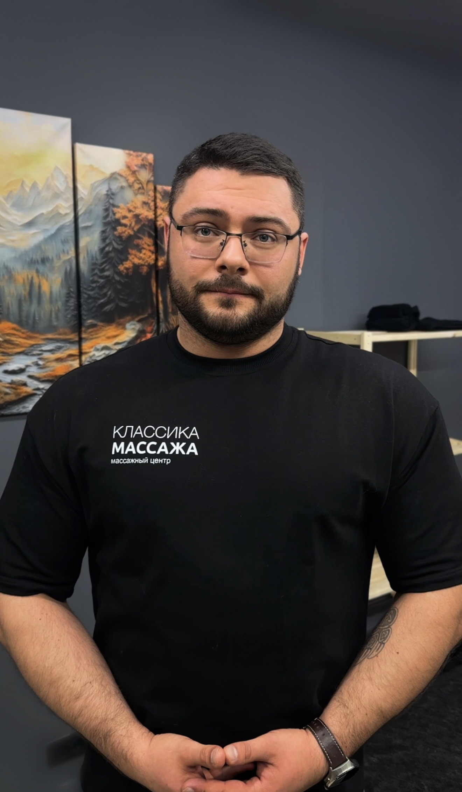
Сологуб Борис
Врач травматолог-ортопед и реабилитолог. Опыт 8 лет.
Артём – не просто массажист, а настоящий эксперт в работе с телом. Спортсмен с многолетним стажем, вице-чемпион СФО по бодибилдингу, он прекрасно знает, как работает мышечная система и что нужно, чтобы тело было здоровым и в тонусе. Опыт работы в массаже – 3 года.
Основные направления работы:
глубокомышечный триггерный массаж
классический массаж
антицеллюлитный массаж
Артём работает глубоко, точно и с индивидуальным подходом каждому клиенту.
Анастасия – не просто массажист, а специалист с медицинским подходом, который точно знает, как помочь вашему телу расслабиться, восстановиться и почувствовать себя лучше. Опыт работы — более 2х лет. Образование: высшее медицинское, специализация – лечебное дело.
Основные направления работы:
общий классический массаж
антицеллюлитный ручной массаж
глубокомышечный массаж
Приходите на сеанс к Анастасии, чтобы убедиться: забота о теле – это не только приятно, но и полезно!
Александр – мастер, который вернет вашему телу легкость и баланс! Он владеет множеством массажных техник и делает акцент на триггерных точках и восстановлении мышечного тонуса. Опыт работы — более 3х лет.
Что делает его массаж особенным?
глубокая проработка мышц без лишней боли
внимание к деталям и индивидуальный подход
знание современных методик и постоянное развитие
Основные направления работы:
классический оздоровительный массаж
глубокомышечный триггерный массаж
Если вы чувствуете напряжение, усталость или хотите улучшить самочувствие, приходите на массаж к Александру. Он точно знает, как промять нужные точки и вернуть вашему телу свободу движений!
Леонтий — мастер-универсал с искренним увлечением своим делом. Он постоянно развивается, совершенствует технику, и самое важное — всегда работает с вниманием к каждому клиенту. Для него массаж — не просто профессия, а способ помочь, облегчить, восстановить.
Основные направления работы:
классический оздоровительный массаж
глубокомышечный триггерный массаж
расслабляющий массаж
Опыт работы — 1 год, за этот срок Леонтий уже получил множество благодарностей от клиентов за чуткость, силу и мягкость одновременно. Он умеет создать ту самую атмосферу, где тело расслабляется, а мысли отпускают напряжение.